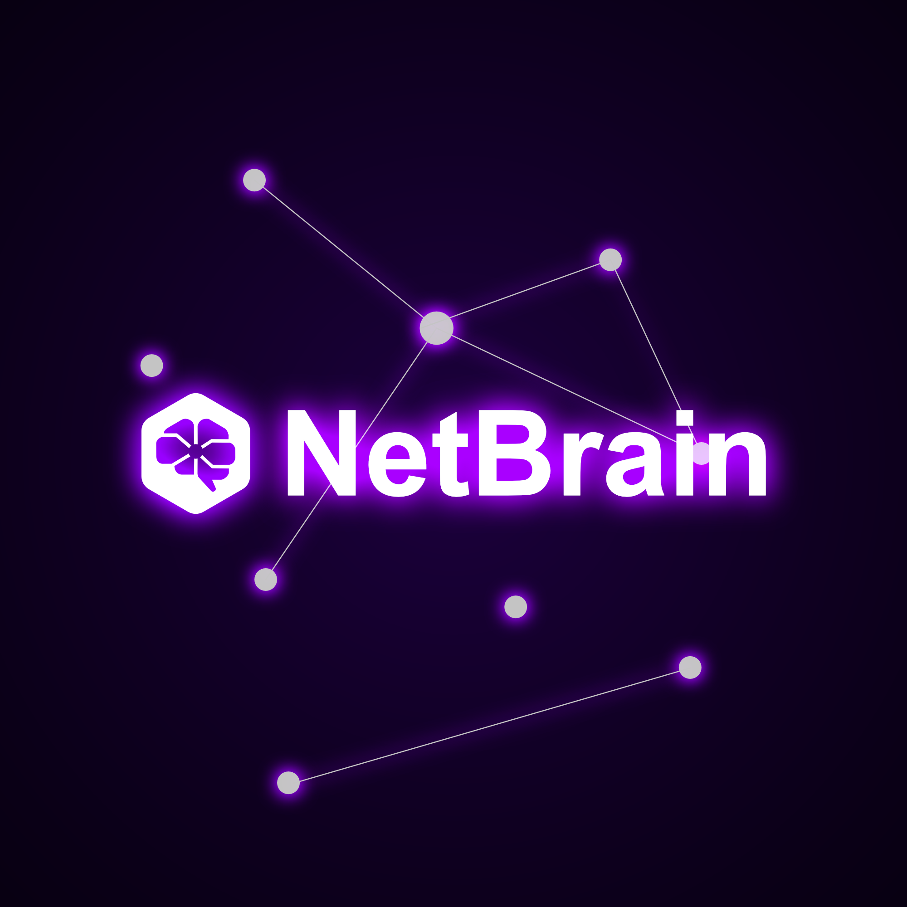

01 / Sistema
NetBrain
Sistema de organização de ideias e notas na nuvem
Desenvolvimento de soluções nativas para OBS Studio focadas no gerenciamento de elementos de transmissão ao vivo.

Sistema de organização de ideias e notas na nuvem

Desenvolvimento de plugins nativos para OBS Studio focado no gerenciamento de elementos de transmissão ao vivo de alta performance.

Modelagem de dados com relacionamentos avançados e criação de relatórios financeiros e de RH com KPIs estratégicos.